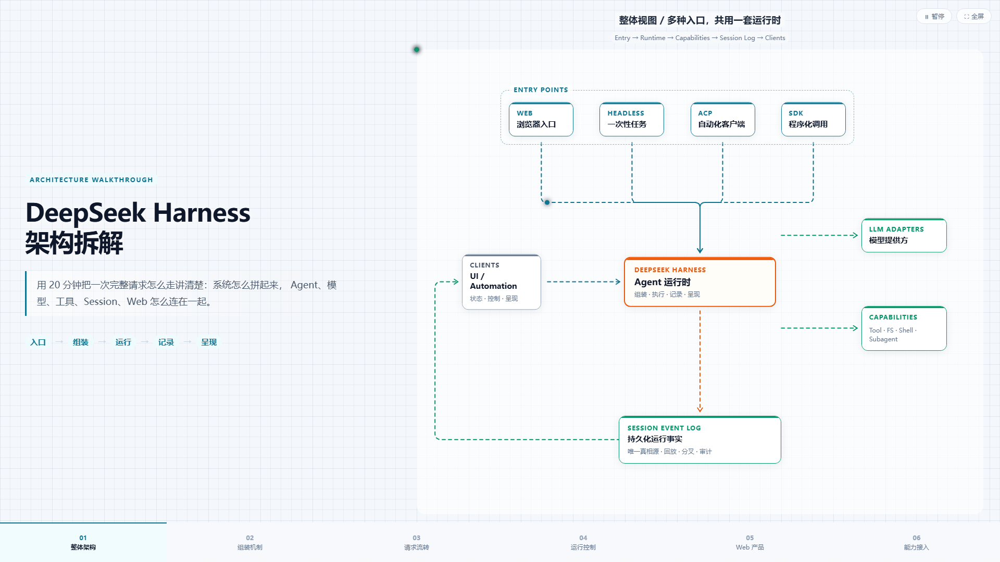

Single-file HTML decks: narrative column, flowing dashed edges, journey dots, semantic node colors, and a Cursor Agent Skill for production workflows.
单文件 HTML 演示：左栏叙事、虚线流动连线、光点 journey、语义化节点配色， 附带可生产的 Cursor Agent Skill 工作流。

Demo controls: Space pause animation · F fullscreen
演示快捷键：Space 暂停动画 · F 全屏